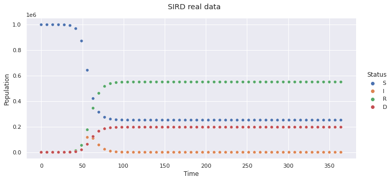
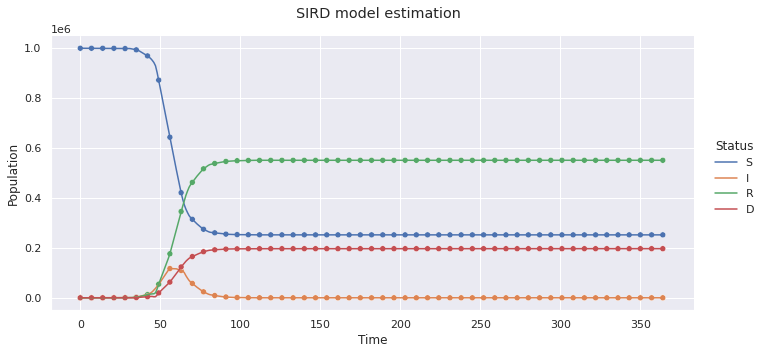

Diseases Informed Neural Networks
Contents
Diseases Informed Neural Networks#
import numpy as np
import pandas as pd
import matplotlib.pyplot as plt
import deepxde as dde
import seaborn as sns
from deepxde.backend import tf
from scipy.integrate import odeint
sns.set_theme(style="whitegrid")
%matplotlib inline
Using backend: tensorflow.compat.v1
---------------------------------------------------------------------------
ModuleNotFoundError Traceback (most recent call last)
Cell In[1], line 4
2 import pandas as pd
3 import matplotlib.pyplot as plt
----> 4 import deepxde as dde
5 import seaborn as sns
7 from deepxde.backend import tf
File ~/mambaforge/envs/nc-book/lib/python3.11/site-packages/deepxde/__init__.py:17
14 from .__about__ import __version__
16 # Should import backend before importing anything else
---> 17 from . import backend
19 from . import callbacks
20 from . import data
File ~/mambaforge/envs/nc-book/lib/python3.11/site-packages/deepxde/backend/__init__.py:100
96 set_default_backend("tensorflow.compat.v1")
97 return "tensorflow.compat.v1"
--> 100 load_backend(get_preferred_backend())
103 def is_enabled(api):
104 """Return true if the api is enabled by the current backend.
105
106 Args:
(...)
110 bool: ``True`` if the API is enabled by the current backend.
111 """
File ~/mambaforge/envs/nc-book/lib/python3.11/site-packages/deepxde/backend/__init__.py:36, in load_backend(mod_name)
33 raise NotImplementedError("Unsupported backend: %s" % mod_name)
35 print("Using backend: %s\n" % mod_name, file=sys.stderr, flush=True)
---> 36 mod = importlib.import_module(".%s" % mod_name.replace(".", "_"), __name__)
37 thismod = sys.modules[__name__]
38 # log backend name
File ~/mambaforge/envs/nc-book/lib/python3.11/importlib/__init__.py:126, in import_module(name, package)
124 break
125 level += 1
--> 126 return _bootstrap._gcd_import(name[level:], package, level)
File ~/mambaforge/envs/nc-book/lib/python3.11/site-packages/deepxde/backend/tensorflow_compat_v1/__init__.py:5
1 import os
3 os.environ["TF_FORCE_GPU_ALLOW_GROWTH"] = "true"
----> 5 from .tensor import * # pylint: disable=redefined-builtin
File ~/mambaforge/envs/nc-book/lib/python3.11/site-packages/deepxde/backend/tensorflow_compat_v1/tensor.py:4
1 """tensorflow.compat.v1 backend implementation"""
2 from packaging.version import Version
----> 4 import tensorflow.compat.v1 as tf
7 if Version(tf.__version__) < Version("2.7.0"):
8 raise RuntimeError("DeepXDE requires TensorFlow>=2.7.0.")
ModuleNotFoundError: No module named 'tensorflow'
Model#
\[\begin{split}
\begin{aligned}
\frac{dS}{dt} &= - \frac{\beta}{N} S I \\
\frac{dI}{dt} &= \frac{\beta}{N} S I - \omega I - \gamma I \\
\frac{dR}{dt} &= \omega I \\
\frac{dD}{dt} &= \gamma I \\
\end{aligned}
\end{split}\]
Susceptible (S): Individuals who have not been infected with COVID-19 and have not isolated themselves from the population
Infected (I): Infectious individuals with COVID-19
Recovered (R): Individuals who survived COVID-19
Dead (D): Individuals who did not survive COVID-19
\(\beta\): Transmission Rate
\(\omega\): Rate at which Infected individuals become Recovered
\(\gamma\): Rate at which Infected individuals become Dead
Initial Conditions#
N = 1e6
beta = 0.5
omega = 1 / 14
gamma = 1 / 5
parameters_real = [beta, omega, gamma]
t = np.arange(0, 366, 7)[:, np.newaxis]
Generate Data#
def sird_model(
t,
N,
beta,
omega,
gamma,
):
def func(y, t):
S, I, R, D = y
dS = - beta / N * S * I
dI = beta / N * S * I - gamma * I - omega * I
dR = gamma * I
dD = omega * I
return [dS, dI, dR, dD]
S_0 = N - 1
I_0 = 1
R_0 = 0
D_0 = 0
y0 = [S_0, I_0, R_0, D_0]
return odeint(func, y0, t)
y = sird_model(np.ravel(t), N, beta, omega, gamma)
y_noise1 = y + np.random.normal(loc=0, scale=y.std(axis=0), size=y.shape) * 0.01
y_noise5 = y + np.random.normal(loc=0, scale=y.std(axis=0), size=y.shape) * 0.05
y_noise10 = y + np.random.normal(loc=0, scale=y.std(axis=0), size=y.shape) * 0.1
names = list("SIRD")
data_real = (
pd.DataFrame(y, columns=names, index=t.ravel())
.rename_axis("time")
.reset_index()
.melt(id_vars="time", var_name="status", value_name="population")
)
sns.set(rc={"figure.facecolor":"white"})
g = sns.relplot(data=data_real, x="time", y="population", hue="status", aspect=2)
g.set_axis_labels("Time", "Population")
g._legend.set_title("Status")
g.tight_layout(w_pad=1)
g.fig.subplots_adjust(top=0.9)
g.fig.suptitle(f"SIRD real data")
# plt.savefig("SIRD_real.png", dpi=300)
plt.show()

DINN#
def dinn(data_t, data_y, N):
# Variables
beta = tf.math.sigmoid(dde.Variable(0.1))
omega = tf.math.sigmoid(dde.Variable(0.1))
gamma = tf.math.sigmoid(dde.Variable(0.1))
variable_list = [beta, omega, gamma]
# ODE model
def ODE(t, y):
S = y[:, 0:1]
I = y[:, 1:2]
R = y[:, 2:3]
D = y[:, 3:4]
dS_t = dde.grad.jacobian(y, t, i=0)
dI_t = dde.grad.jacobian(y, t, i=1)
dR_t = dde.grad.jacobian(y, t, i=2)
dD_t = dde.grad.jacobian(y, t, i=3)
return [
dS_t - (- beta / N * S * I),
dI_t - (beta / N * S * I - gamma * I - omega * I),
dR_t - (gamma * I),
dD_t - (omega * I)
]
# Geometry
geom = dde.geometry.TimeDomain(data_t[0, 0], data_t[-1, 0])
# Boundaries
def boundary(_, on_initial):
return on_initial
# Initial conditions
ic_S = dde.icbc.IC(geom, lambda x: N- 1, boundary, component=0)
ic_I = dde.icbc.IC(geom, lambda x: 1, boundary, component=1)
ic_R = dde.icbc.IC(geom, lambda x: 0, boundary, component=2)
ic_D = dde.icbc.IC(geom, lambda x: 0, boundary, component=3)
# Train data
observe_S = dde.icbc.PointSetBC(data_t, data_y[:, 0:1], component=0)
observe_I = dde.icbc.PointSetBC(data_t, data_y[:, 1:2], component=1)
observe_R = dde.icbc.PointSetBC(data_t, data_y[:, 2:3], component=2)
observe_D = dde.icbc.PointSetBC(data_t, data_y[:, 3:4], component=3)
# Model
data = dde.data.PDE(
geom,
ODE,
[
ic_S,
ic_I,
ic_R,
ic_D,
observe_S,
observe_I,
observe_R,
observe_D
],
num_domain=400,
num_boundary=2,
anchors=data_t,
)
net = dde.nn.FNN([1] + [128] * 3 + [4], "relu", "Glorot uniform")
def feature_transform(t):
t = t / data_t[-1, 0]
return t
net.apply_feature_transform(feature_transform)
iterations = 50000
model = dde.Model(data, net)
model.compile(
"adam",
lr=1e-3,
loss_weights=4 * [1] + 4 * [1] + 4 * [1e1],
external_trainable_variables=variable_list
)
variable = dde.callbacks.VariableValue(
variable_list,
period=5000,
# filename="variables_sird.dat"
)
losshistory, train_state = model.train(
iterations=iterations,
display_every=10000,
callbacks=[variable]
)
# dde.saveplot(losshistory, train_state, issave=True, isplot=True)
return model, variable
model, variable = dinn(t, y, N)
Compiling model...
Warning: For the backend tensorflow.compat.v1, `external_trainable_variables` is ignored, and all trainable ``tf.Variable`` objects are automatically collected.
Building feed-forward neural network...
'build' took 0.036716 s
/home/aoguedao/mambaforge/envs/pinn/lib/python3.9/site-packages/skopt/sampler/sobol.py:246: UserWarning: The balance properties of Sobol' points require n to be a power of 2. 0 points have been previously generated, then: n=0+402=402.
warnings.warn("The balance properties of Sobol' points require "
/home/aoguedao/mambaforge/envs/pinn/lib/python3.9/site-packages/deepxde/nn/tensorflow_compat_v1/fnn.py:103: UserWarning: `tf.layers.dense` is deprecated and will be removed in a future version. Please use `tf.keras.layers.Dense` instead.
return tf.layers.dense(
2022-10-12 12:24:12.709288: I tensorflow/core/platform/cpu_feature_guard.cc:193] This TensorFlow binary is optimized with oneAPI Deep Neural Network Library (oneDNN) to use the following CPU instructions in performance-critical operations: AVX2 FMA
To enable them in other operations, rebuild TensorFlow with the appropriate compiler flags.
'compile' took 0.534678 s
Initializing variables...
Training model...
Step Train loss Test loss Test metric
0 [1.94e-09, 1.20e-03, 2.99e-04, 2.93e-04, 1.00e+12, 1.00e+00, 0.00e+00, 0.00e+00, 2.09e+12, 6.18e+09, 2.46e+12, 3.14e+11] [1.94e-09, 1.20e-03, 2.99e-04, 2.93e-04, 1.00e+12, 1.00e+00, 0.00e+00, 0.00e+00, 2.09e+12, 6.18e+09, 2.46e+12, 3.14e+11] []
2022-10-12 12:24:13.220681: I tensorflow/compiler/mlir/mlir_graph_optimization_pass.cc:354] MLIR V1 optimization pass is not enabled
---------------------------------------------------------------------------
KeyboardInterrupt Traceback (most recent call last)
/mnt/c/Users/aogueda/Documents/git/neural_computing_workshop/lessons/dinn.ipynb Cell 16 in <cell line: 1>()
----> <a href='vscode-notebook-cell://wsl%2Bubuntu/mnt/c/Users/aogueda/Documents/git/neural_computing_workshop/lessons/dinn.ipynb#X23sdnNjb2RlLXJlbW90ZQ%3D%3D?line=0'>1</a> model, variable = dinn(t, y, N)
/mnt/c/Users/aogueda/Documents/git/neural_computing_workshop/lessons/dinn.ipynb Cell 16 in dinn(data_t, data_y, N)
<a href='vscode-notebook-cell://wsl%2Bubuntu/mnt/c/Users/aogueda/Documents/git/neural_computing_workshop/lessons/dinn.ipynb#X23sdnNjb2RlLXJlbW90ZQ%3D%3D?line=80'>81</a> model.compile(
<a href='vscode-notebook-cell://wsl%2Bubuntu/mnt/c/Users/aogueda/Documents/git/neural_computing_workshop/lessons/dinn.ipynb#X23sdnNjb2RlLXJlbW90ZQ%3D%3D?line=81'>82</a> "adam",
<a href='vscode-notebook-cell://wsl%2Bubuntu/mnt/c/Users/aogueda/Documents/git/neural_computing_workshop/lessons/dinn.ipynb#X23sdnNjb2RlLXJlbW90ZQ%3D%3D?line=82'>83</a> lr=1e-3,
<a href='vscode-notebook-cell://wsl%2Bubuntu/mnt/c/Users/aogueda/Documents/git/neural_computing_workshop/lessons/dinn.ipynb#X23sdnNjb2RlLXJlbW90ZQ%3D%3D?line=83'>84</a> loss_weights=4 * [1] + 4 * [1] + 4 * [1e1],
<a href='vscode-notebook-cell://wsl%2Bubuntu/mnt/c/Users/aogueda/Documents/git/neural_computing_workshop/lessons/dinn.ipynb#X23sdnNjb2RlLXJlbW90ZQ%3D%3D?line=84'>85</a> external_trainable_variables=variable_list
<a href='vscode-notebook-cell://wsl%2Bubuntu/mnt/c/Users/aogueda/Documents/git/neural_computing_workshop/lessons/dinn.ipynb#X23sdnNjb2RlLXJlbW90ZQ%3D%3D?line=85'>86</a> )
<a href='vscode-notebook-cell://wsl%2Bubuntu/mnt/c/Users/aogueda/Documents/git/neural_computing_workshop/lessons/dinn.ipynb#X23sdnNjb2RlLXJlbW90ZQ%3D%3D?line=86'>87</a> variable = dde.callbacks.VariableValue(
<a href='vscode-notebook-cell://wsl%2Bubuntu/mnt/c/Users/aogueda/Documents/git/neural_computing_workshop/lessons/dinn.ipynb#X23sdnNjb2RlLXJlbW90ZQ%3D%3D?line=87'>88</a> variable_list,
<a href='vscode-notebook-cell://wsl%2Bubuntu/mnt/c/Users/aogueda/Documents/git/neural_computing_workshop/lessons/dinn.ipynb#X23sdnNjb2RlLXJlbW90ZQ%3D%3D?line=88'>89</a> period=5000,
<a href='vscode-notebook-cell://wsl%2Bubuntu/mnt/c/Users/aogueda/Documents/git/neural_computing_workshop/lessons/dinn.ipynb#X23sdnNjb2RlLXJlbW90ZQ%3D%3D?line=89'>90</a> filename="variables_sird.dat"
<a href='vscode-notebook-cell://wsl%2Bubuntu/mnt/c/Users/aogueda/Documents/git/neural_computing_workshop/lessons/dinn.ipynb#X23sdnNjb2RlLXJlbW90ZQ%3D%3D?line=90'>91</a> )
---> <a href='vscode-notebook-cell://wsl%2Bubuntu/mnt/c/Users/aogueda/Documents/git/neural_computing_workshop/lessons/dinn.ipynb#X23sdnNjb2RlLXJlbW90ZQ%3D%3D?line=91'>92</a> losshistory, train_state = model.train(
<a href='vscode-notebook-cell://wsl%2Bubuntu/mnt/c/Users/aogueda/Documents/git/neural_computing_workshop/lessons/dinn.ipynb#X23sdnNjb2RlLXJlbW90ZQ%3D%3D?line=92'>93</a> iterations=iterations,
<a href='vscode-notebook-cell://wsl%2Bubuntu/mnt/c/Users/aogueda/Documents/git/neural_computing_workshop/lessons/dinn.ipynb#X23sdnNjb2RlLXJlbW90ZQ%3D%3D?line=93'>94</a> display_every=10000,
<a href='vscode-notebook-cell://wsl%2Bubuntu/mnt/c/Users/aogueda/Documents/git/neural_computing_workshop/lessons/dinn.ipynb#X23sdnNjb2RlLXJlbW90ZQ%3D%3D?line=94'>95</a> callbacks=[variable]
<a href='vscode-notebook-cell://wsl%2Bubuntu/mnt/c/Users/aogueda/Documents/git/neural_computing_workshop/lessons/dinn.ipynb#X23sdnNjb2RlLXJlbW90ZQ%3D%3D?line=95'>96</a> )
<a href='vscode-notebook-cell://wsl%2Bubuntu/mnt/c/Users/aogueda/Documents/git/neural_computing_workshop/lessons/dinn.ipynb#X23sdnNjb2RlLXJlbW90ZQ%3D%3D?line=96'>97</a> # dde.saveplot(losshistory, train_state, issave=True, isplot=True)
<a href='vscode-notebook-cell://wsl%2Bubuntu/mnt/c/Users/aogueda/Documents/git/neural_computing_workshop/lessons/dinn.ipynb#X23sdnNjb2RlLXJlbW90ZQ%3D%3D?line=97'>98</a> return model, variable
File ~/mambaforge/envs/pinn/lib/python3.9/site-packages/deepxde/utils/internal.py:22, in timing.<locals>.wrapper(*args, **kwargs)
19 @wraps(f)
20 def wrapper(*args, **kwargs):
21 ts = timeit.default_timer()
---> 22 result = f(*args, **kwargs)
23 te = timeit.default_timer()
24 print("%r took %f s\n" % (f.__name__, te - ts))
File ~/mambaforge/envs/pinn/lib/python3.9/site-packages/deepxde/model.py:573, in Model.train(self, iterations, batch_size, display_every, disregard_previous_best, callbacks, model_restore_path, model_save_path, epochs)
571 if iterations is None:
572 raise ValueError("No iterations for {}.".format(self.opt_name))
--> 573 self._train_sgd(iterations, display_every)
574 self.callbacks.on_train_end()
576 print("")
File ~/mambaforge/envs/pinn/lib/python3.9/site-packages/deepxde/model.py:590, in Model._train_sgd(self, iterations, display_every)
585 self.callbacks.on_batch_begin()
587 self.train_state.set_data_train(
588 *self.data.train_next_batch(self.batch_size)
589 )
--> 590 self._train_step(
591 self.train_state.X_train,
592 self.train_state.y_train,
593 self.train_state.train_aux_vars,
594 )
596 self.train_state.epoch += 1
597 self.train_state.step += 1
File ~/mambaforge/envs/pinn/lib/python3.9/site-packages/deepxde/model.py:489, in Model._train_step(self, inputs, targets, auxiliary_vars)
487 if backend_name == "tensorflow.compat.v1":
488 feed_dict = self.net.feed_dict(True, inputs, targets, auxiliary_vars)
--> 489 self.sess.run(self.train_step, feed_dict=feed_dict)
490 elif backend_name == "tensorflow":
491 self.train_step(inputs, targets, auxiliary_vars)
File ~/mambaforge/envs/pinn/lib/python3.9/site-packages/tensorflow/python/client/session.py:967, in BaseSession.run(self, fetches, feed_dict, options, run_metadata)
964 run_metadata_ptr = tf_session.TF_NewBuffer() if run_metadata else None
966 try:
--> 967 result = self._run(None, fetches, feed_dict, options_ptr,
968 run_metadata_ptr)
969 if run_metadata:
970 proto_data = tf_session.TF_GetBuffer(run_metadata_ptr)
File ~/mambaforge/envs/pinn/lib/python3.9/site-packages/tensorflow/python/client/session.py:1190, in BaseSession._run(self, handle, fetches, feed_dict, options, run_metadata)
1187 # We only want to really perform the run if fetches or targets are provided,
1188 # or if the call is a partial run that specifies feeds.
1189 if final_fetches or final_targets or (handle and feed_dict_tensor):
-> 1190 results = self._do_run(handle, final_targets, final_fetches,
1191 feed_dict_tensor, options, run_metadata)
1192 else:
1193 results = []
File ~/mambaforge/envs/pinn/lib/python3.9/site-packages/tensorflow/python/client/session.py:1370, in BaseSession._do_run(self, handle, target_list, fetch_list, feed_dict, options, run_metadata)
1367 return self._call_tf_sessionprun(handle, feed_dict, fetch_list)
1369 if handle is None:
-> 1370 return self._do_call(_run_fn, feeds, fetches, targets, options,
1371 run_metadata)
1372 else:
1373 return self._do_call(_prun_fn, handle, feeds, fetches)
File ~/mambaforge/envs/pinn/lib/python3.9/site-packages/tensorflow/python/client/session.py:1377, in BaseSession._do_call(self, fn, *args)
1375 def _do_call(self, fn, *args):
1376 try:
-> 1377 return fn(*args)
1378 except errors.OpError as e:
1379 message = compat.as_text(e.message)
File ~/mambaforge/envs/pinn/lib/python3.9/site-packages/tensorflow/python/client/session.py:1360, in BaseSession._do_run.<locals>._run_fn(feed_dict, fetch_list, target_list, options, run_metadata)
1357 def _run_fn(feed_dict, fetch_list, target_list, options, run_metadata):
1358 # Ensure any changes to the graph are reflected in the runtime.
1359 self._extend_graph()
-> 1360 return self._call_tf_sessionrun(options, feed_dict, fetch_list,
1361 target_list, run_metadata)
File ~/mambaforge/envs/pinn/lib/python3.9/site-packages/tensorflow/python/client/session.py:1453, in BaseSession._call_tf_sessionrun(self, options, feed_dict, fetch_list, target_list, run_metadata)
1451 def _call_tf_sessionrun(self, options, feed_dict, fetch_list, target_list,
1452 run_metadata):
-> 1453 return tf_session.TF_SessionRun_wrapper(self._session, options, feed_dict,
1454 fetch_list, target_list,
1455 run_metadata)
KeyboardInterrupt:
Postprocessing#
parameter_names = [
"beta",
"omega",
"gamma",
]
errors = (
pd.DataFrame(
{
"real": parameters_real,
"predicted": variable.value
},
index=parameter_names
)
.assign(
relative_error=lambda x: (x["real"] - x["predicted"]).abs() / x["real"] * 100
)
)
errors.to_excel("SIRD_errors.xlsx")
errors
| real | predicted | relative_error | |
|---|---|---|---|
| beta | 0.500000 | 0.514282 | 2.856469 |
| omega | 0.071429 | 0.073270 | 2.577646 |
| gamma | 0.200000 | 0.206412 | 3.205986 |
full_t = np.arange(0, 366)[:, np.newaxis]
y_pred = model.predict(full_t)
data_pred = (
pd.DataFrame(y_pred, columns=names, index=full_t.ravel())
.rename_axis("time")
.reset_index()
.melt(id_vars="time", var_name="status", value_name="population")
)
data_pred.head()
| time | status | population | |
|---|---|---|---|
| 0 | 0 | S | 999962.0000 |
| 1 | 1 | S | 999936.1250 |
| 2 | 2 | S | 999910.4375 |
| 3 | 3 | S | 999884.6875 |
| 4 | 4 | S | 999858.6875 |
sns.set(rc={"figure.facecolor":"white"})
g = sns.relplot(
data=data_pred,
x="time",
y="population",
hue="status",
kind="line",
aspect=2,
)
sns.scatterplot(
data=data_real,
x="time",
y="population",
hue="status",
ax=g.ax,
legend=False
)
(
g.set_axis_labels("Time", "Population")
.set_titles("Zone {row_name}")
.tight_layout(w_pad=1)
)
g._legend.set_title("Status")
g.fig.subplots_adjust(top=0.9)
g.fig.suptitle(f"SIRD model estimation")
plt.savefig("SIRD_estimation.png", dpi=300)
plt.show()

dde.metrics.l2_relative_error(y, model.predict(t))
2022-08-07 18:03:45.808553: I tensorflow/stream_executor/cuda/cuda_blas.cc:1786] TensorFloat-32 will be used for the matrix multiplication. This will only be logged once.
0.0002186510047609107
dde.metrics.mean_squared_error(y, model.predict(t))
5823.651947318222